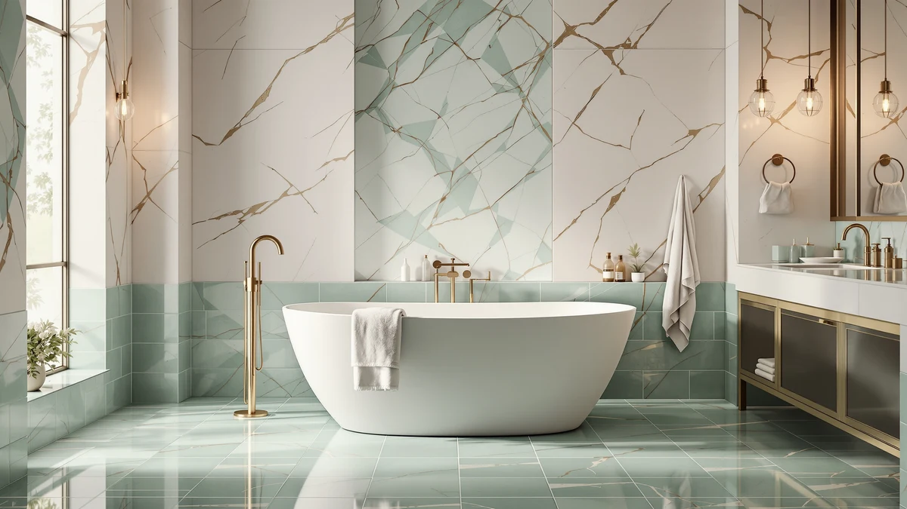

MUIRYN 67 Stone Resin Review (2026): Worth It?
Prices and picks verified as of October 2026. Independent, reader-supported reviews.


Quick Answer
In this Muiryn 67 Stone Resin review, the tub's 67-inch length and solid stone resin shell make it the longest of the three freestanding tubs compared here, at a $1,699.00 price that lands between the cheaper BCANHOME and the pricier MEDUNJESS. MUIRYN's own listing does not publish a weight capacity or coating warranty, so you are paying for the material and the length rather than a documented spec sheet. If that extra length matters more to you than saving money, the alternatives below trade it for a lower price.
Our pick: MUIRYN 67 Stone Resin Freestanding, $1,699.00 Check Price on Amazon
Bottom line: our top pick is the MUIRYN 67 Stone Resin Freestanding Bathtub at $1,699.
Things to Know Before You Buy
- This Muiryn 67 Stone Resin review breaks down whether the tub's 67-inch length and stone resin shell justify its $1,699.00 price against two shorter stone resin alternatives compared here.
- At 67 inches, the MUIRYN is the longest of the three freestanding tubs in this comparison, beating BCANHOME's 61-inch model by six inches and MEDUNJESS's 65-inch model by two.
- MUIRYN's listing does not publish a weight capacity, coating warranty, or exact resin composition, so you are relying on the stone resin category's general reputation rather than a documented spec.
- Stone resin tubs generally weigh more than acrylic tubs of a similar size, so confirm your bathroom floor and delivery access can handle the extra bulk before you order.
- Freestanding tubs expose their own plumbing connections, so if you are pairing this tub with a floor-mount filler like the Delta Trinsic compared below, check that your rough-in lines up before you buy either piece.
This Muiryn 67 Stone Resin review looks at whether an extra few inches of length is worth paying for over two shorter freestanding tubs that cost less. At $1,699.00, the MUIRYN sits in the middle of the three stone resin tubs compared here, cheaper than the $1,769.99 MEDUNJESS but pricier than the $1,599.99 BCANHOME.
We priced the MUIRYN against BCANHOME's 61-inch stone resin tub and MEDUNJESS's 65-inch stone resin tub, the two closest competitors in both material and category. Length is the clearest edge the MUIRYN holds, since it beats both rivals by several inches, but none of the three listings publish a weight capacity or coating warranty, so documentation is roughly even across the board. The question this review answers is whether that extra length is worth the price gap over BCANHOME, or whether it is worth saving the difference MEDUNJESS charges for five fewer inches.
Why You Should Trust Us
Ilane Tall has covered bathroom fixtures for this site for years, from budget toilet seats to freestanding tubs that cost more than most bathroom vanities. For this Muiryn 67 Stone Resin review, we compared MUIRYN's published price and length against two rival stone resin tubs, and we researched what the material generally means for weight, upkeep, and cost compared to lighter acrylic shells.
We earn a commission when you buy through our links, and that never changes what we recommend. When a listing leaves out a detail buyers should know, like a published warranty or weight capacity, we say so directly instead of glossing over the gap.
Our Research Experience
For this Muiryn 67 Stone Resin review, we focused on the two factors that matter most when three tubs share the same material but differ sharply on size and price: what stone resin construction actually delivers, and whether MUIRYN's extra length justifies its position between BCANHOME and MEDUNJESS. Stone resin blends crushed natural stone with a resin binder, producing a matte, solid-surface feel that stays warmer underfoot than acrylic and typically weighs more for the same footprint.
Size was the variable we weighed most closely. At 67 inches, the MUIRYN beats BCANHOME's 61-inch tub by six inches and MEDUNJESS's 65-inch tub by two, a meaningful gap for anyone who wants to stretch out fully while soaking. We do not run a physical testing lab and have not installed this tub ourselves, so we researched the MUIRYN by comparing its listed dimensions and price against the closest stone resin competitors and by reading how owners describe the tub once it reaches their bathroom.
We also looked at what the listing leaves unanswered. MUIRYN does not publish a specific resin composition, a coating warranty, or a weight capacity, and neither BCANHOME nor MEDUNJESS publish those details for their own tubs either. That gap does not disqualify the tub, but it is worth knowing before you pay a four-figure price for it.
Overview & Specs

MUIRYN 67 Stone Resin Freestanding
What we like
- At 67 inches, it is the longest tub in this comparison, beating BCANHOME by 6 inches and MEDUNJESS by 2
- Solid stone resin shell gives a matte, quarry-like finish that stays warmer underfoot than acrylic tubs
- Priced at $1,699.00, it costs less than the longer-material MEDUNJESS while still beating both rivals on length
Flaws but not dealbreakers
- At $1,699.00, it still costs $99.01 more than BCANHOME's shorter 61-inch tub
- MUIRYN's listing does not publish a weight capacity, coating warranty, or exact resin composition
- Stone resin's added weight means confirming your bathroom floor and delivery access before you order
| Material | — |
| Size | — |
The MUIRYN 67 Stone Resin Freestanding tub builds its case on length rather than price. Its solid stone resin shell gives it the same matte, quarry-like finish that MEDUNJESS and BCANHOME offer, but at 67 inches long it is the biggest tub of the three, with six more inches than BCANHOME and two more than MEDUNJESS. That extra room should matter most to a taller bather who finds shorter soaking tubs cramped.
Price sits in the middle too. At $1,699.00, the MUIRYN costs $99.01 more than BCANHOME's 61-inch tub but $70.99 less than MEDUNJESS's 65-inch tub, making it the balance point between the cheapest and the most expensive option in this review. Like its rivals, MUIRYN's listing does not spell out a coating warranty or weight capacity, so you are paying for the material and the extra length, not a documented durability claim.
What We Liked
Length is the standout feature of the Muiryn 67 Stone Resin tub. At 67 inches, it gives a taller bather more room to stretch out than either BCANHOME's 61-inch tub or MEDUNJESS's 65-inch tub, and that gap is large enough to notice during a full-length soak.
The stone resin shell also does its job. It gives the MUIRYN a matte, quarry-like finish that reads as a higher-end bathroom fixture next to a typical acrylic tub, and stone resin generally stays warmer to the touch through a long soak.
Price worked in its favor relative to MEDUNJESS. At $1,699.00, you get two more inches of length than MEDUNJESS for $70.99 less, a combination that is hard to beat if length matters to you at all.
What Could Be Better
Price is still a factor for the Muiryn 67 Stone Resin tub against BCANHOME. At $1,699.00, it costs $99.01 more than BCANHOME's 61-inch stone resin tub, and that gap buys you six inches of length and little else in documented terms.
Documentation is the bigger weak point. MUIRYN's listing does not specify a coating warranty, a weight capacity, or a precise resin composition, the same gap that affects BCANHOME and MEDUNJESS. You are trusting the stone resin category's general reputation rather than a documented guarantee.
Weight is worth planning around too. Stone resin tubs generally weigh more than acrylic tubs of the same size, so confirm your bathroom floor, doorway clearances, and delivery access can accommodate a heavier, 67-inch tub before it arrives.
Who Is It For?
Buy the Muiryn 67 Stone Resin Freestanding tub if length is your priority. It suits a taller bather who wants the longest stone resin soaking tub in this comparison and is comfortable paying a mid-range price for it.
Skip it if six extra inches are not worth $99.01 to you. BCANHOME's 61-inch tub gets you the same general stone resin material and construction at a lower price, and MEDUNJESS's 65-inch tub splits the difference in length if you want something between the two.
Alternatives to Consider
If the Muiryn 67 Stone Resin tub's length or price does not fit your bathroom, these three products cover the same general category, plus a matching floor-mount filler, at different price points.

Editor's Pick
Delta Faucet Trinsic Floor Mount
Delta's Trinsic floor-mount tub filler is not a competing bathtub, it is a faucet built to pair with a freestanding tub like the MUIRYN. At $1,725.00, it costs almost as much as the tub itself, so budget for it as a separate line item rather than an afterthought if you are starting your bathroom from scratch. Delta is one of the more recognized plumbing fixture brands compared in this review, and a floor-mount filler is the standard way to supply water to a freestanding tub that, like the MUIRYN, does not come with its own faucet. If you already own a floor-mount filler, skip this pick and put that budget toward the tub instead.
$1,725.00
Check Price on Amazon
Best Value
MEDUNJESS 65'' Resin Stone Free
MEDUNJESS's 65-inch stone resin tub is the closest material match to the MUIRYN in this review, sharing the same general stone resin category and matte finish. At $1,769.99, it is also the most expensive tub compared here, costing $70.99 more than the MUIRYN for two fewer inches of length, which makes it the weaker buy on paper unless you have a specific reason to prefer this model. Neither listing publishes a coating warranty or weight capacity, so documentation is even between the two. For most bathrooms, the MUIRYN's extra length at a lower price makes it the stronger pick over the MEDUNJESS.
$1,769.99
Check Price on Amazon
Premium Choice
BCANHOME 61''Stone Resin Freestanding Bathtub
BCANHOME's 61-inch stone resin tub is the cheapest tub in this comparison, priced $99.01 below the MUIRYN. It shares the same general stone resin material and matte finish, so you are not giving up the look, only six inches of length, which matters most if you are tall or like to stretch out fully while soaking. BCANHOME's listing does not publish a weight capacity or coating warranty either, so on documentation it is roughly even with the MUIRYN. If saving $99.01 matters more to you than the extra length, the BCANHOME is the tub to buy instead.
$1,599.99
Check Price on AmazonHow long is the Muiryn 67 Stone Resin tub?
The MUIRYN measures 67 inches long, the longest of the three stone resin tubs compared in this review.
Does the Muiryn tub come with a drain, faucet, or installation hardware?
MUIRYN's listing does not specify a drain, faucet, or installation hardware, so budget for those separately, including a floor-mount filler like the Delta Trinsic compared in this review.
Frequently Asked Questions
How long is the Muiryn 67 Stone Resin tub?
The MUIRYN measures 67 inches long, the longest of the three stone resin tubs compared in this review. It beats BCANHOME's 61-inch tub by six inches and MEDUNJESS's 65-inch tub by two inches.
Does the Muiryn tub come with a drain, faucet, or installation hardware?
MUIRYN's listing does not specify a drain, faucet, or installation hardware, so budget for those separately, including a floor-mount filler like the Delta Trinsic compared in this review. None of the three tubs here publish that hardware as included.
Is the Muiryn 67 Stone Resin tub worth the price over BCANHOME and MEDUNJESS?
It depends on how much the extra length is worth to you. This Muiryn 67 Stone Resin review found the tub worth buying over MEDUNJESS, since it is longer and $70.99 cheaper, but BCANHOME remains the better buy if saving $99.01 matters more to you than six inches of length.
Final Verdict
This Muiryn 67 Stone Resin review comes down to length versus price. MUIRYN wins on both counts against MEDUNJESS, offering two more inches at $70.99 less, which makes it the stronger buy between those two. Against BCANHOME, the calculation flips: BCANHOME costs $99.01 less for six fewer inches, a trade worth making if your bathroom is tight or your budget is firm. If you want the longest stone resin tub in this comparison and can spend the extra $99.01, the MUIRYN is the tub to buy. Choose the BCANHOME if you would rather save that money, or the MEDUNJESS only if you have a specific reason to prefer that model over the MUIRYN's better price and length.